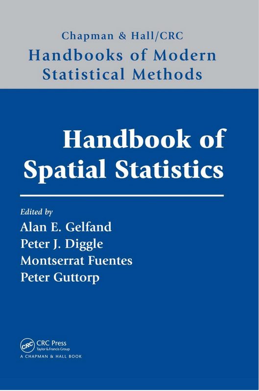
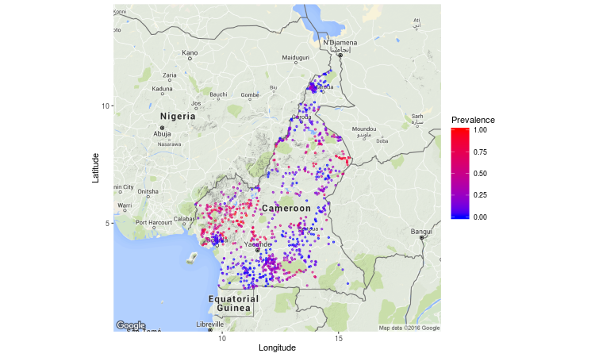

Day 1 – Spatial & Spatio-temporal Modelling
Introduction
About me
- Completed a Bachelor’s degree in Statistics at FUTA
- Master’s in Mathamatical Sciences at AIMS-Tanzania
- PhD in Statistics and Epidemiology at University of Lancaster
- Postdoc at University of Manchester
- Lecturer in Statistics at the University of Manchester
Overview of the 3 days
- Spatial and spatio-temporal analysis (different likelihoods)
- Joint modelling of multiple malaria processes
- Non-stationary spatial processes
- Hybrid machine learning + geostatistical models
Linear Regression
- Goal: Model a continuous response variable as a linear function of predictors.
- Model \(Y = X \beta + \epsilon\), where \(\epsilon \sim N(0, \sigma^2)\)
- Key Assumption
- Linearity
- Independence
- Homoscedasticity (constant variance)
- Normality of errors
Generalized Linear Models (GLMs)
- Extension of linear models to handle non-normal response distributions.
- Three components:
- Random component: Distribution from the exponential family (e.g., Binomial, Poisson).
- Systematic component: Linear predictor \(\eta = X\beta\).
- Link function: Relates \(E(Y)\) to \(\eta\).
- Examples:
- Logistic regression for binary outcomes –
logit link function - Poisson regression for count data –
log link function
- Logistic regression for binary outcomes –
Why Spatial Statistics?
Spatial Dependence:
Observations collected at nearby locations are often more similar than those farther apart.Ignoring Spatial Structure:
- Leads to biased parameter estimates.
- Underestimates uncertainty.
- Misses important spatial patterns.
Applications:
- Disease mapping
- Environmental monitoring
- Agricultural field trials
- Disease mapping
Goal:
Account for spatial correlation to improve prediction and inference.
Spatial Analysis
Spatial Statistics

Classification of spatial statistics
Cressie’s book classifies spatial statistics according to data format:
- Geostatistical data
- Lattice data
- Point patterns
Gelfand’s book classifies spatial statistics according to spatial variation:
- Discrete spatial variation: Gaussian Markov Random Field (GMRF)
- Continuous spatial variation: Gaussian Random Field (GMRF)
Geostatistical data: River blindness in Cameroon
Geostatistical data: River blindness in Cameroon
Lattice Data: COPD emergency admission

Lattice data: COPD emergency admission
Point pattern: Primary biliary cirrhosis data

Point pattern: Primary biliary cirrhosis data
Model-based Geostatistics
Modelling Geostatistical Data – Model-based Geostatistics
- The term Model-based Geostatistics (MBG) was coined by Peter Diggle in 1998 (Diggle, Tawn, and Moyeed 1998; Diggle and Giorgi 2019).
- MBG applies general principles of statistical modelling and inference to the analysis of geostatistical data.
- It emphasises the use of likelihood-based inference.
- and the use of latent spatial process (Gaussian or stochastic process)
Standard MBG model
\[ Y_i = \beta_0 + \underbrace{\beta_1 d_1(x_i) + \beta_2 d_2(x_i)}_{\text{explained}} + \underbrace{S(x_i) + Z_j}_{\text{unexplained}}, \]
where
- \(\beta_0\), \(\beta_1\), and \(\beta_2\) are regression coefficients;
- \(d_1(x)\) and \(d_2(x)\) denote covariates/predictors at location \(x\);
- \(S(x)\) is the stochastic spatial process;
- \(Z_j\) represents measurement error.
Modelling \(S(x)\) and \(Z_j\)
- \(Z_i \sim N(0, \tau^2)\)
- We assume that \(S(x)\) is a zero-mean stationary and isotropic Gaussian process. i.e \(S \sim \text{MVN}(0, \Sigma)\)
- The \((i,j)\)th entry of \(\Sigma\) is \[ \Sigma_{ij} = \operatorname{Cov}\big(S(x_i), S(x_j)\big) = \sigma^2 \rho(u) \]
- \(u = \|x_i - x_j\|\) is the Euclidean distance between locations \(x_i\) and \(x_j\)
- How do we choose parametric correlation function \(\rho(\cdot)\)?
The Matérn correlation function
\[ \rho(u; \phi, \kappa) = \frac{1}{2^{\kappa-1}\Gamma(\kappa)} \left(\frac{u}{\phi}\right)^\kappa K_\kappa\!\left(\frac{u}{\phi}\right), \]
\(K_\kappa(\cdot)\): modified Bessel function of order \(\kappa\)
Interpretation
- \(\kappa\) determines the smoothness: \(\kappa > r \Rightarrow S(x)\) is \(r\) times differentiable
- \(\phi\) determines the scale of spatial correlation
Special cases
- \(\kappa = 0.5 \Rightarrow \rho(u) = \exp\{-u/\phi\}\)
- \(\kappa \to \infty \Rightarrow \rho(u) = \exp\{-(u/\phi)^2\}\)
Often sufficient to choose \(\kappa \in \{0.5, 1.5, 2.5\}\)
Matérn correlation function – \(\kappa\)
\[ \rho(u; \phi, \kappa) = \frac{1}{2^{\kappa-1}\Gamma(\kappa)} \left(\frac{u}{\phi}\right)^\kappa K_\kappa\!\left(\frac{u}{\phi}\right), \]

Exponential correlation function: \(\rho(u; \phi, 0.5) = \exp\{-u/\phi\}\)
The scale of the spatial correlation – \(\phi\)

Do we need the process \(S(x)\)?
Regression residuals
\[ \hat{r}_i = Y_i - \hat{Y}_i \] from a GLMEach \(\hat{r}_i\) estimates
\[ S(x_i) + Z_i \]
The variogram
Empirical variogram \[ \hat{V}(u) = \frac{1}{2|N(u)|}\sum_{(i,j)\in N(u)}(\hat{r}_i-\hat{r}_j)^2 \]
where
\[ N(u)=\{(i,j): \lVert x_i-x_j\rVert=u\} \]

Confirming existence of spatial correlation
- Randomly permute the \(\hat{r}_i\) while holding the locations \(x\) fixed
- Compute the empirical variogram using the permuted \(\hat{r}_i\)
- Repeat steps 1–2 \(B\) times
- Use the resulting \(B\) variograms to compute pointwise 95% tolerance bands at each distance bin
- If the observed variogram lies outside the 95% band, this indicates residual spatial correlation

Inference: Maximum likelihood estimation
Multivariate Gaussian distribution
\[ Y \sim \text{MVN}(D\beta, \sigma^2 R + \tau^2 I) \]- \(D\): matrix of covariates, \([D]_{ik} = d_k(x_i)\)
- \(R\): spatial correlation matrix,
\([R]_{ij} = \rho(u_{ij})\), with \(u_{ij} = \|x_i - x_j\|\)
- \(D\): matrix of covariates, \([D]_{ik} = d_k(x_i)\)
Fitting process
- Initialise \(\beta\) (e.g. using ordinary least squares)
- Initialise \(\theta\) (e.g. using the empirical variogram)
- Maximise \[ \ell(\theta) = \log\{f(y; \beta, \theta)\}, \] where \(f(\cdot; \beta, \theta)\) is the multivariate Gaussian density
Beyond Gaussian responses
So far, we assumed: \[ Y \sim \text{MVN}(D\beta, \sigma^2 R + \tau^2 I) \]
However, many geostatistical datasets are:
- Binary (presence / absence)
- Counts (number of cases)
- Rates or proportions
A Gaussian likelihood is no longer appropriate
Separating data and process models
Model-based geostatistics distinguishes between:
Observation model (likelihood): \[ Y_i \mid \eta_i \sim \pi(y_i \mid \eta_i) \]
Latent process model: \[ \eta_i = X_i \beta + S(x_i) + Z_i \]
Key idea:
- Non-Gaussian data
- Gaussian latent structure
Common likelihoods in practice
Gaussian \[ Y_i \mid \eta_i \sim N(\eta_i, \sigma^2) \] Continuous measurements (e.g. pollution levels)
Binomial \[ Y_i \mid \eta_i \sim \text{Binomial}(n_i, p_i), \qquad \text{logit}(p_i) = \eta_i \] Prevalence survey data
Poisson \[ Y_i \mid \eta_i \sim \text{Poisson}(\lambda_i), \qquad \log(\lambda_i) = \eta_i \] Disease counts, event data
Link functions
The linear predictor enters the likelihood via a link:
\[ g(\mu_i) = \eta_i = X_i\beta + S(x_i) + Z_i \]
Examples:
- Identity link → Gaussian data
- Logit link → Binomial data
- Log link → Poisson data
This gives a generalized linear mixed model (GLMM) structure
Computational challenges
For non-Gaussian likelihoods:
The marginal likelihood requires: \[ L(\theta) = \int \pi(y \mid S, \theta)\pi(S \mid \theta)\,dS \]
High-dimensional integral over latent field \(x\)
No closed-form solution
Consequences:
- Maximum likelihood is expensive
- Bayesian inference via MCMC is slow
Classical solutions and limitations
- Laplace approximation
- Penalised quasi-likelihood (PQL)
- MCMC-based Bayesian inference
Limitations:
- Poor scalability for large spatial fields
- Long runtimes
- Difficult model exploration
Key takeaway
We want:
- Flexible likelihoods (Binomial, Poisson, etc.)
- Spatial and spatio-temporal random effects
- Bayesian inference
- Computational efficiency
This motivates Integrated Nested Laplace Approximation (INLA)
From likelihoods to INLA
Hierarchical models setup:
- Data likelihood: possibly non-Gaussian
- Latent field: Gaussian with spatial dependence
- Hyperparameters: low-dimensional
This class of models is known as Latent Gaussian Models
INLA is designed specifically for this class
Why INLA?
- Fully Bayesian inference for latent Gaussian models is often computationally expensive
- Markov chain Monte Carlo (MCMC):
- Accurate but slow for large spatial datasets
- Poor scaling with dimension of latent field
- INLA provides:
- Deterministic (non-sampling) approximation
- Orders-of-magnitude speed-ups
- Accurate marginal posterior distributions
Latent Gaussian models
INLA is designed for latent Gaussian models (LGMs):
\[ y_i \mid \eta_i, \theta \sim \pi(y_i \mid \eta_i, \theta), \qquad \eta = A S \]
where
- \(S \sim \mathcal{N}(0, Q(\theta)^{-1})\) is a latent Gaussian field
- \(A\) is a known design / projection matrix
- \(\theta\) are low-dimensional hyperparameters
Examples of \(S\):
- Spatial Gaussian random fields
- Temporal effects
- Random effects and smoothers
Key idea: sparsity
- Latent field \(S\) is modelled as a Gaussian Markov Random Field (GMRF)
- GMRFs have sparse precision matrices \(Q(\theta)\)
Why this matters:
- Sparse matrix algebra is fast
- Enables scalable inference for large spatial problems
- Crucial for INLA’s computational efficiency
Stage 1: Hyperparameter inference
Goal: \[ \pi(\theta \mid y) \propto \frac{\pi(y \mid S, \theta)\pi(S \mid \theta)\pi(\theta)} {\pi(S \mid y, \theta)} \]
- INLA uses a Laplace approximation to integrate out \(S\)
- Produces an accurate approximation to: \[ \pi(\theta \mid y) \]
Key point:
- \(\theta\) is low-dimensional → numerical optimisation is feasible
Stage 2: Latent field given \(\theta\)
Conditional on \(\theta\), INLA approximates: \[ \pi(S \mid \theta, y) \]
Approximation:
- Gaussian
- Centered at the mode of the conditional posterior
- Uses local curvature (Hessian)
This step exploits:
- Gaussian structure of \(S\)
- Sparse precision matrix
Stage 3: Marginal posteriors
Final goal: \[ \pi(S_i \mid y), \qquad \pi(\theta_j \mid y) \]
INLA computes: \[ \pi(S_i \mid y) = \int \pi(S_i \mid \theta, y)\,\pi(\theta \mid y)\,d\theta \]
Integration performed numerically
Output:
- Marginal posterior means
- Credible intervals
- Full marginal densities
GRF vs GMRF: concept vs computation
Lindgren, Rue, and Lindström (2011) provides the link between the two.
- Gaussian Random Field (GRF):
- Defined on a continuous spatial domain
- Used for geostatistical modelling
- Dense covariance structure
- Gaussian Markov Random Field (GMRF):
- Defined on a finite set of locations
- Sparse precision matrix
- Computationally efficient
Key point:
👉 In INLA, a GMRF is used as a computational approximation to a continuous GRF
Spatial modelling in INLA: SPDE approach
- Continuous Gaussian random fields are represented via: Stochastic Partial Differential Equations (SPDEs)
Key ideas:
- Start with a Matérn GRF (continuous)
- Approximate it on a triangulated mesh
- Obtain a computational GMRF
- Retain Matérn covariance structure
Benefits:
- Sparse precision matrix
- Fast Bayesian inference with INLA
Why the SPDE approach?
In geostatistics, we often model spatial dependence using Gaussian random fields (GRFs) with Matérn covariance
For observations at locations \(x_1, \dots, x_n\):
- Covariance matrix is dense
- Computational cost is \(\mathcal{O}(n^3)\)
This becomes infeasible for large spatial datasets
Gaussian random fields
A spatial Gaussian random field is defined as:
\[ S(x) \sim \text{GRF}(0, C(\cdot)) \]
with covariance function: \[ \text{Cov}\{S(x), S(x')\} = C(\|x - x'\|) \]
- The Matérn family is widely used
- Defined on a continuous spatial domain
From covariance to SPDE
A key result (Whittle, 1954):
A Matérn GRF is the solution to the SPDE: \[ (\kappa^2 - \Delta)^{\alpha/2} S(x) = \mathcal{W}(x), \]
where: - \(\Delta\) is the Laplacian operator - \(\mathcal{W}(x)\) is Gaussian white noise - Parameters \((\kappa, \alpha)\) control range and smoothness
Discretising the SPDE
- The spatial domain is discretised using a triangular mesh
- The continuous field is approximated as: \[ S(x) \approx \sum_{k=1}^K w_k \psi_k(x) \]
where:
- \(\psi_k(x)\) are basis functions
- \(w_k\) are random weights
Local support of basis functions ⇒ sparsity
From GRF to GMRF
The SPDE discretisation yields \[ \mathbf{w} \sim \mathcal{N}(0, Q^{-1}) \]
Precision matrix \(Q\) is sparse
This defines a Gaussian Markov Random Field (GMRF)
Key consequence: - Fast computation - Scales to large spatial problems
SPDE approach: summary
- Specify a Matérn Gaussian random field
- Use its equivalent SPDE representation
- Approximate the SPDE on a triangulated mesh
- Obtain a sparse GMRF representation
- Perform fast Bayesian inference using INLA
When should you use INLA?
INLA is well suited for:
- Spatial and spatio-temporal models
- Latent Gaussian models
- Large datasets with structured dependence
INLA is less suitable for:
- Highly non-Gaussian latent structures
- Very high-dimensional hyperparameter spaces
- Models requiring full joint posterior samples
INLA and inlabru R packages
What is inlabru?
An R package built on top of
INLADesigned for spatial and spatio-temporal modelling using
Integrated Nested Laplace Approximation (INLA)Provides an intuitive interface for:
- Spatial point process models
- Geostatistical models
Install
INLA: https://www.r-inla.org/download-installExamples and documentation: https://inlabru-org.github.io/inlabru/
Key features
- Formula-based model specification
- Flexible integration with
sf,sp, andraster